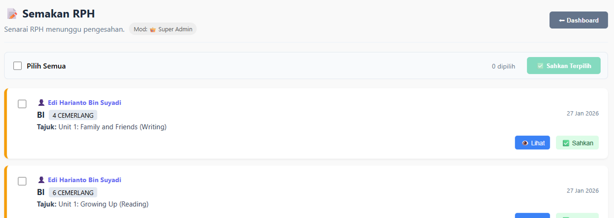

Portal Dokumentasi Digital
Panduan lengkap dan padat bagi sistem pengurusan sekolah bersepadu: Kehadiran, PdP, Pentaksiran, dan Kokurikulum.
e-Hadir
e-RPH
MyEasy
KMS
e-Hadir Digital
1. Modul Pengguna (Guru & AKP)
- Antara Muka Mesra Pengguna: Proses log masuk yang ringkas dengan pilihan Kod PIN 6-Digit.
- Imbasan Pintar: Menggunakan kamera peranti untuk melakukan pengecaman wajah secara automatik dengan arahan visual "Sila pandang kamera".
- Verifikasi Pantas: Memastikan identiti individu disahkan sebelum rekod kehadiran disimpan ke dalam pangkalan data.


2. Modul Pentadbir (Admin Dashboard)

- Analitik Masa Nyata: Dashboard memaparkan statistik kritikal seperti jumlah staf yang hadir vs belum hadir, serta bilangan kakitangan yang hadir lewat (ditanda dengan warna amaran).
- Pengurusan Rekod: Admin boleh melihat senarai nama, masa log masuk yang tepat, dan status kehadiran (Hadir/Lewat) secara tersusun (A-Z).
- Kawalan Akses: Ruang log masuk khas untuk pentadbir menggunakan emel dan kata laluan bagi menjaga kerahsiaan data.
- Pendaftaran Staf: Membolehkan admin mendaftarkan wajah dan maklumat kakitangan baru terus melalui dashboard.
e-RPH V3.0
1. Modul Pengguna (Guru)
- Antara Muka Intuitif: Dashboard pusat yang memberikan akses pantas kepada penjanaan RPH, pengurusan jadual, dan sejarah laporan.
- Pengurusan Jadual Fleksibel: Guru boleh mengemas kini sesi pengajaran mingguan (Isnin-Jumaat) dengan mudah untuk memastikan data RPH sentiasa tepat.
- Penjana Automatik Pintar: Fungsi "Jana Semua + Auto Refleksi" membolehkan RPH harian dijana lengkap dengan objektif dan refleksi hanya dengan satu klik.
- Sejarah & Cetakan: Memudahkan guru menyemak status penghantaran (Draf/Disahkan) serta mencetak RPH untuk simpanan fail fizikal jika perlu.


2. Modul Pentadbir (Penyelia)

- Semakan Digital Berpusat: Penyelia boleh melihat senarai RPH yang dihantar oleh guru di bawah seliaan mereka secara terus.
- Pengesahan Pantas: Butang "Sahkan" membolehkan pentadbir meluluskan RPH tanpa perlu tandatangan fizikal, mempercepatkan proses semakan mingguan.
- Pemantauan Status: Memudahkan admin mengenal pasti guru yang belum menghantar RPH atau RPH yang masih dalam status draf.
MyEasy V1.2
1. Modul Pengguna (Guru Subjek)
- Integrasi DELIMa (SSO): Log masuk selamat menggunakan akaun Google Classroom (MOE-DL) untuk memastikan integriti data markah murid.
- Input Markah Berpusat: Guru boleh memasukkan markah bagi semua subjek teras (BM, BI, MT, SN, dll) dalam satu paparan jadual yang mudah.
- Analisis Automatik: Sebaik sahaja markah dimasukkan, sistem akan mengira Gred Purata Mata (GPM) dan Peratus Lulus secara automatik untuk rujukan segera.
- Eksport Data: Kemudahan untuk memuat turun analisis dan senarai markah dalam format Excel/CSV untuk pelaporan.

Log Masuk DELIMa
Akses selamat guru

KMS Digital
1. Modul Pengguna (Guru Penasihat)
- Pengurusan Unit Kokurikulum: Guru penasihat mempunyai akses khusus mengikut unit masing-masing (contoh: Pengakap, BSMM, Kelab Bahasa).
- Pelaporan Aktiviti Mingguan: Memudahkan guru merekod kehadiran murid dan menulis laporan aktiviti mingguan secara digital.
- Sistem Merit: Pemberian markah merit kepada murid yang aktif boleh dilakukan terus melalui sistem untuk pengiraan PAJSK kelak.

2. Modul Pentadbir (PK Koku / SU Koku)


- Kawalan Sistem Berpusat: Admin mempunyai kuasa penuh untuk mendaftarkan unit-unit kokurikulum dan melantik guru penasihat.
- Import Data Murid: Kemudahan memuat naik data murid secara pukal menggunakan fail CSV, menjimatkan masa pendaftaran awal tahun.
- Analisis Enrolmen: Dashboard admin memaparkan statistik bilangan ahli bagi setiap unit untuk memastikan agihan murid yang seimbang.
- Pautan Pantas: Akses mudah untuk fungsi pendaftaran guru baru dan semakan status murid.